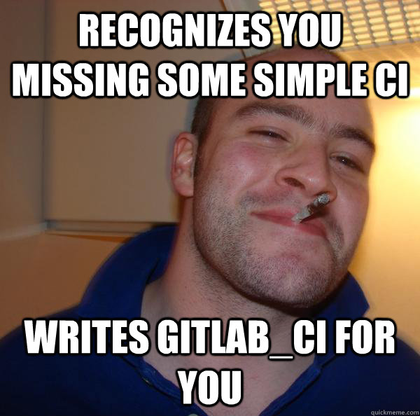

gitlab und gitlab_ci

- @pebra | http://pebra.net
- @bitbitesco | http://bitbites.de
gitlab?
- github zum selbst hosten
- eine grafische Oberfläche für git mit zusätzlichen Features
- Rails-Projekt
 source: http://gitlabhq.com
source: http://gitlabhq.com
Features
Merge requests

issues

visualisierungen

branch-verlauf

Code review mit Kommentaren

Organisation
- Gruppen
- Teams
- Namespaces
- Meilensteine
Anbindung an
- campfire
- hipchat
- gitlab_ci
Gitlab_ci?
good guys at gitlab
Ein continous integration Tool, das entwickelt wurde um mit Gitlab zusammen zu arbeiten.
Das Dashboard
 source: http://ci.gitlab.org
source: http://ci.gitlab.org
Arbeitsweise
- Verbindet sich zu einer Gitlab-Instanz
- Beobachtet einen Branch
- Führt ein vom Nutzer definiertes Script aus
Arbeitsweise - Runners